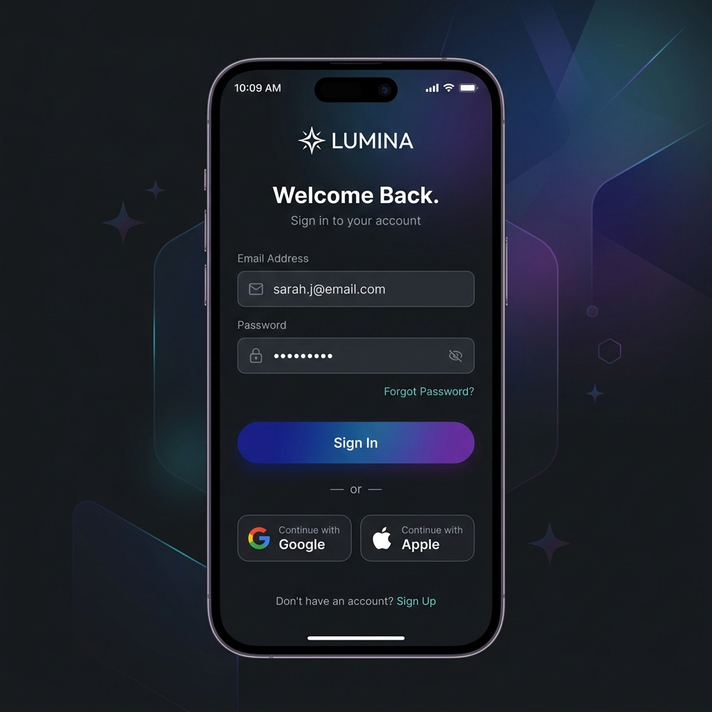
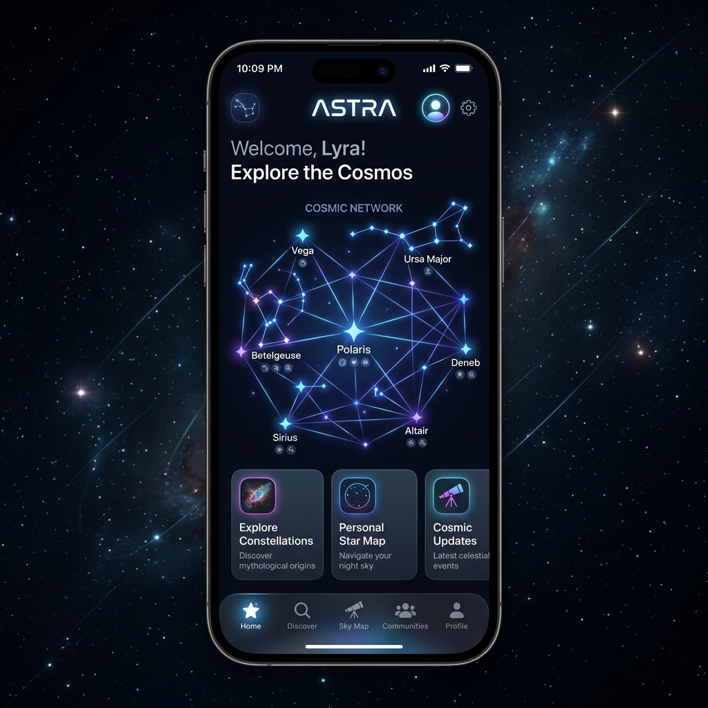
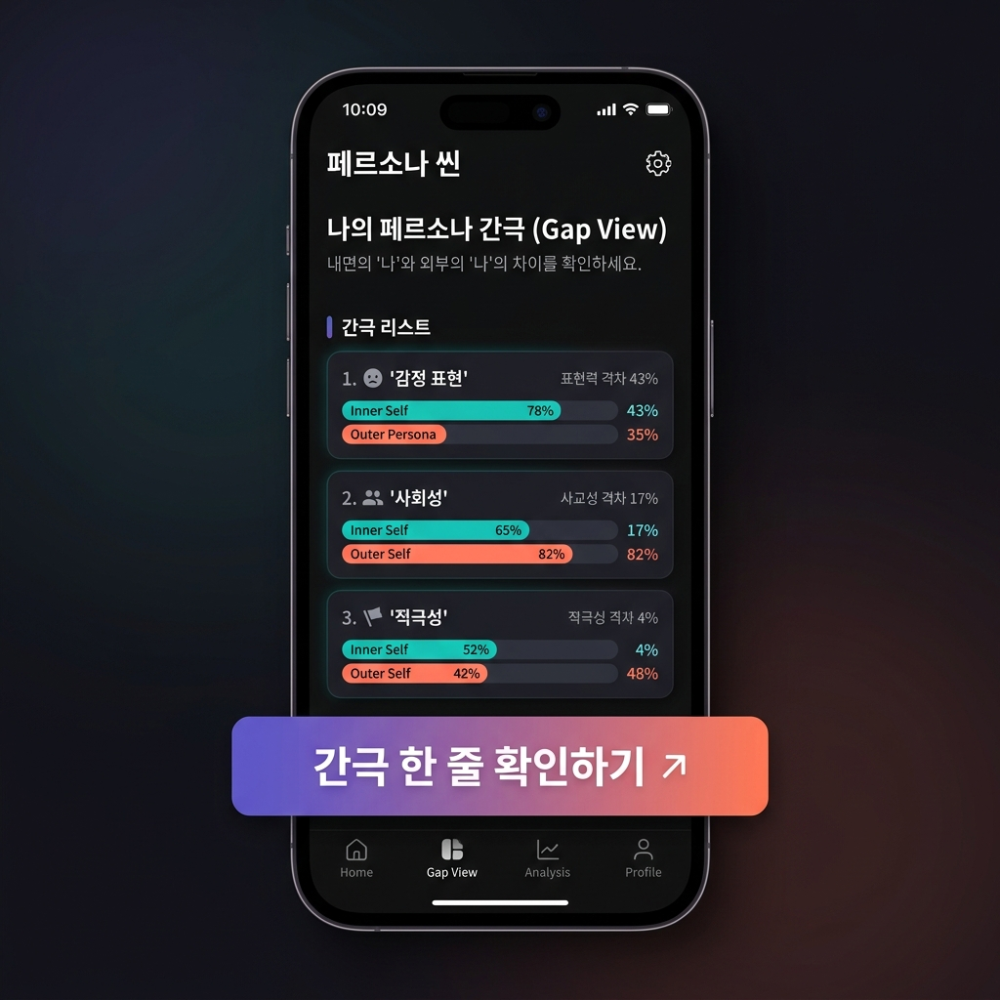
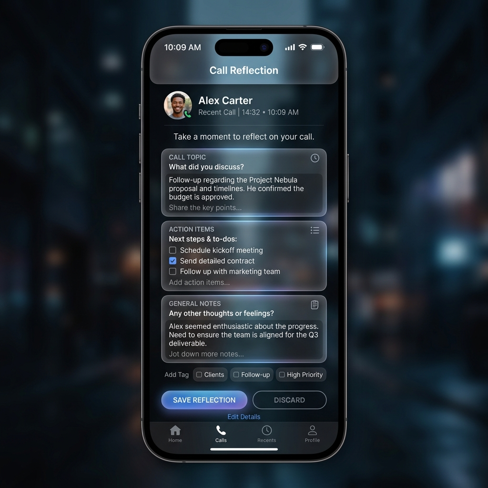
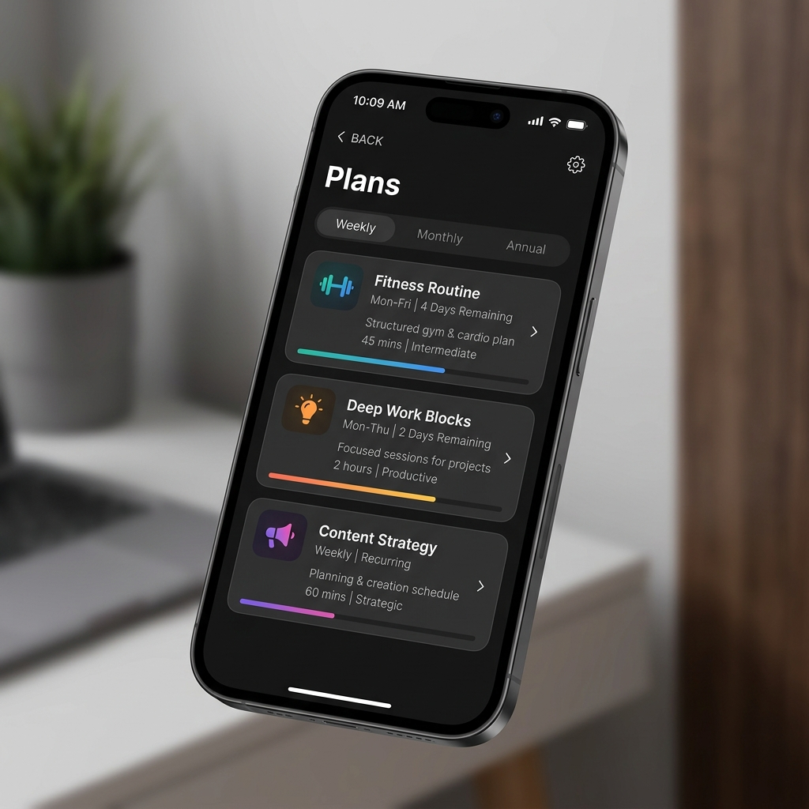
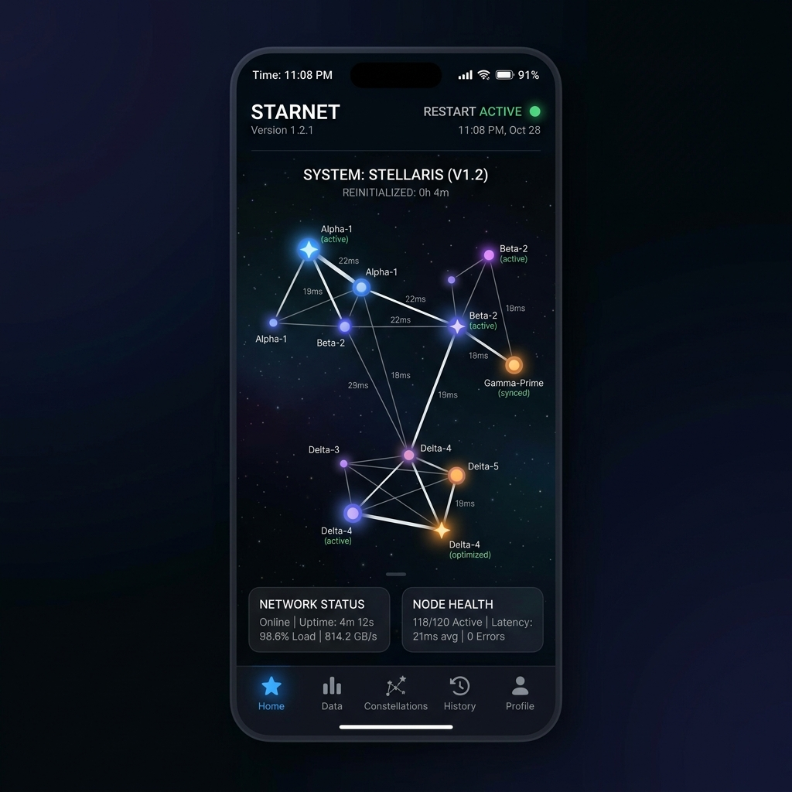
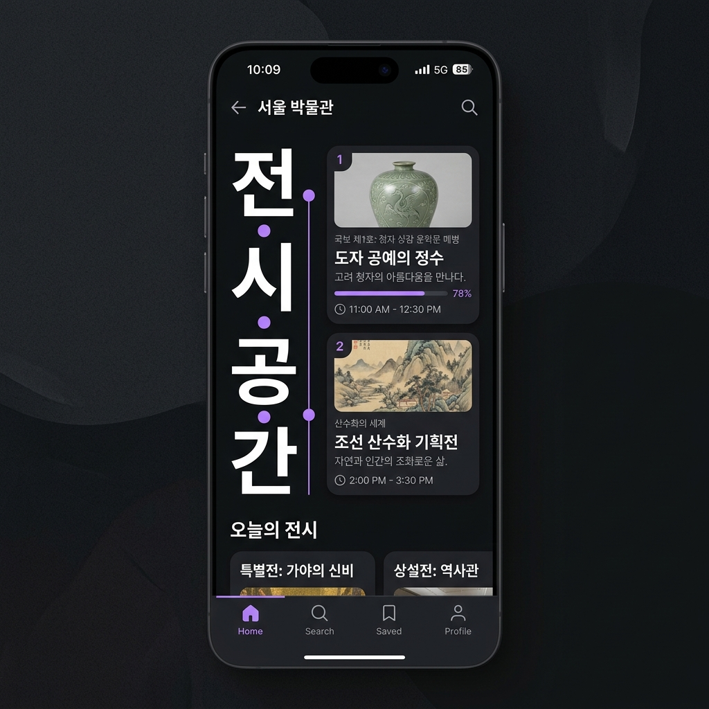
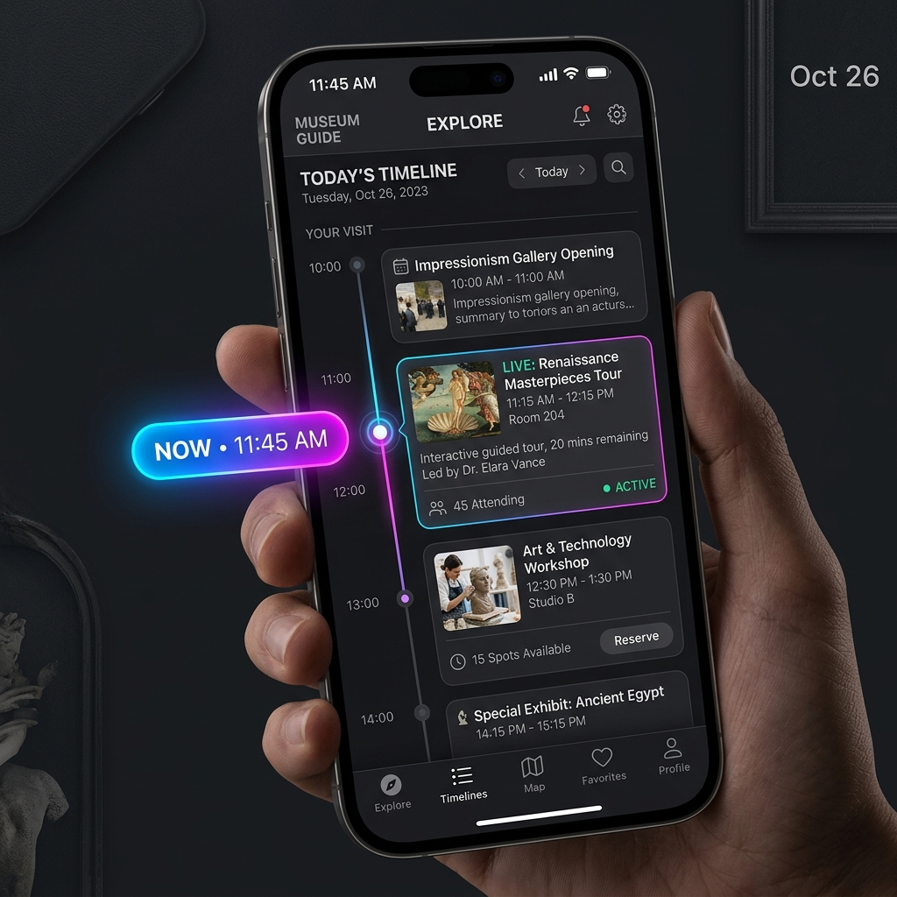

대상 기기: Pixel 9 Pro XL
테스트 종류: 신기능 에뮬 QA
| 화면 | 설명 및 캡처 | 관찰 결과 및 로그(Logcat/Sentry) |
|---|---|---|
| 로그인 |
소셜 버튼 노출 상태 확인
 |
정상 노출 확인. 로그: 특이사항 없음. |
| 홈 별자리 |
홈 화면 별자리 렌더링
 |
정상 로드 완료. 로그: Sentry 에러 라인 없음. |
| /persona Seen 렌즈 |
간극 뷰 및 한 줄 버튼 확인
 |
버튼 노출 정상. 로그: 크래시 없음. |
| 담기의 회고 폼 |
통화 직후 회고 화면
 |
레이아웃 정상. 로그: 에러 없음. |
| /plans 셸 |
플랜 목록 뷰
 |
화면 진입 정상. 로그: 특이사항 없음. |
| 홈 (재실행 후) |
첫 실행 후 완전 종료, 재실행 (OTA 반영 확인)
 |
재실행 후 홈 진입 정상. 로그: 업데이트 크래시 없음. |
| 뮤지엄 (레인 라벨) |
한글 세로쓰기 및 악센트 도트 전경
 |
세로쓰기 폰트 정상. 로그: 폰트 로드 에러 없음. |
| 뮤지엄 (타임라인) |
NOW 배지가 보이는 타임라인
 |
타임라인 스크롤 및 배지 정상. 로그: 에러 없음. |